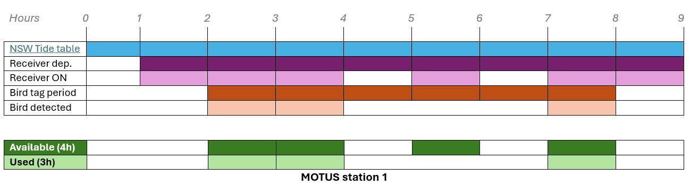
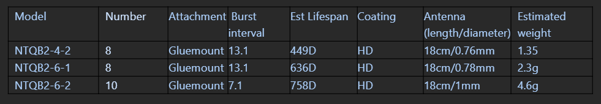

library(motus)
library(dplyr)
library(here)
library(forcats)
library(ggplot2)
library(lubridate)
library(tidyr)
library(purrr)
library(readr)
library(bioRad)
library(hms)
library(dplyr)
library(ggplot2)
library(scales)Station usage - hours
Load your data in your R environment - see Load & Format > Reproducibility
And load your activity table too!
recv.act <- tbl(sql.motus, "activity") %>%
collect() %>%
as.data.frame() %>%
rename(deviceID = "motusDeviceID") %>%
# keep our deployed antennas only
filter(deviceID %in% unique(recv$deviceID)) %>%
# Set the time properly - IMPORTANT
mutate(date = as_datetime(as.POSIXct(hourBin* 3600,
origin = "1970-01-06",
tz = "UTC")),
dateAus = as_datetime(as.POSIXct(hourBin* 3600,
origin = "1970-01-06",
tz = "UTC"),
tz = "Australia/Sydney")) Pre-requisite
This analysis compares the time available for each tidal category (Diurnal High Tide, Nocturnal High Tide, Diurnal Low Tide and Nocturnal Low tide) with the time each shorebird species spent at Motus stations.
First, we need to determine the available time for each species group and for each Motus station. Second, we need to calculate the time used for each bird in every species and for each MOTUS stations too.
The below procedure breaks down how we assessed:
- Tide variable
- The time available
- The time used

Schema: Definition of available and used periods across bird individuals and Motus stations
TIDE VARIABLE
Based on New South Wales Tide Tables we were able to extract and classify the total time for each of the four categories of tide that occurred within the Hunter estuary. Note that one data-set is provided at the estuary scale, therefore, we assume the tide is occurring at the same scale, time, frequency and amplitude across our MOTUS station.
Tide table informs for Low and High tide peaks. Half of the period between peak n and peak n-1 is taken, added to the period between peak n and peak n+1, then expanded in hours for further analysis. The tide associated to peak n defines its variable period (i.e. red lines below is defined as high tide since peak n is a high tide peak).

Schema: Definition of tide variables (high or low) for one period (red line)
tide_data <- tide_data %>%
arrange(tideDateTimeAus) %>%
mutate(prev_time = lag(tideDateTimeAus),
next_time = lead(tideDateTimeAus) ) %>%
filter(!is.na(prev_time) & !is.na(next_time)) %>%
mutate(duration_h = as.numeric(difftime(tideDateTimeAus, prev_time, units = "hours")/2 +
difftime(next_time, tideDateTimeAus, units = "hours")/2)) %>%
mutate(sunriseNewc = sunrise(tideDateTimeAus, 151.7833, -32.9167, elev = -0.268, tz = "Australia/Sydney", force_tz = TRUE),
sunsetNewc = sunset(tideDateTimeAus, 151.7833, -32.9167, elev = -0.268, tz = "Australia/Sydney", force_tz = TRUE),
sunriseNewcTime = strftime(sunriseNewc, format = "%H:%M:%S", tz = "Australia/Sydney"),
sunsetNewcTime = strftime(sunsetNewc, format = "%H:%M:%S", tz = "Australia/Sydney")) %>%
mutate(tideDiel = case_when(tideDateTimeAus < sunriseNewc ~ "Nocturnal",
tideDateTimeAus > sunriseNewc & tideDateTimeAus < sunsetNewc ~ "Diurnal",
tideDateTimeAus > sunsetNewc ~ "Nocturnal")) %>%
mutate(tideCategory = case_when(high_low == "Low" & tideDiel == "Diurnal" ~ "Diurnal_Low",
high_low == "Low" & tideDiel == "Nocturnal" ~ "Nocturnal_Low",
high_low == "High" & tideDiel == "Diurnal" ~ "Diurnal_High",
high_low == "High" & tideDiel == "Nocturnal" ~ "Nocturnal_High") %>%
as_factor()) %>%
rename(tideHighLow = high_low,
timeAus = tideDateTimeAus) %>%
select(timeAus, tideCategory, tideHighLow, tideDiel, duration_h, sunriseNewc, sunsetNewc)TIME AVAILABLE
Now tide data ready to be processed, we need to define for each individual (birds) and across each Motus stations, what was the amount of time available for the four tide categories.
Available time for each Motus stations is accessed with activity table: each row is a dated record of noise or a tag detected - see Survey effort > Activity table.
We need to extract the temporal coverage of each station, starting from deployment date to the last recorded activity, and expand this period in hours.
# Sort the terminated serno (if terminated, ie. one box removed from one antenna site, a date comes along)
# but still needed for accessing survey effort as the station is currently running with another serno
recv.act.term <- recv.act %>%
left_join(recv %>%
filter(!is.na(timeEndAus)) %>%
select(deviceID, serno, recvDeployName),
"deviceID") %>%
filter(!is.na(recvDeployName)) %>%
mutate(SernoStation = paste0(recvDeployName, "_", serno))
# Sort the currently running serno
recv.act.runn <- recv.act %>%
left_join(recv %>%
filter(is.na(timeEndAus)) %>%
select(deviceID, serno, recvDeployName),
"deviceID") %>%
filter(!is.na(recvDeployName)) %>%
mutate(SernoStation = paste0(recvDeployName, "_", serno))
# Merging in one data-set to use Station's name further + pick-up the rounded hours
recv.act <- bind_rows(recv.act.runn, recv.act.term) %>%
mutate(hour_dt = round_date(dateAus, "hour"))
# Providing helpful variables
recv <- recv %>%
mutate(SernoStation = paste0(recvDeployName, "_", serno),
lisStart = timeStartAus,
lisEnd = if_else(
is.na(timeEndAus), # means the station is still running since the last data downloading
with_tz(Sys.time(), "Australia/Sydney"),
with_tz(as_datetime(timeEndAus, tz = "UTC"), "Australia/Sydney")) )
# Generating hourly sequences per SernoStation from start to end dates of the deviceID at particular sites
recv_hours <- recv %>%
select(recvDeployName, deviceID, SernoStation, lisStart, lisEnd) %>%
group_by(SernoStation) %>%
rowwise() %>%
mutate(hour_dt = list(seq(from = round_date(lisStart, unit = "hour"),
to = round_date(lisEnd, unit = "hour"),
by = "hour")) ) %>%
unnest(cols = c(hour_dt)) %>%
ungroup()
# Simplify station variables (recvDeployName)
recv <- recv %>%
select(!recvDeployName)
recv$recvDeployName <- sub("_SG-.*", "", recv$SernoStation)
recv_hours <- recv_hours %>%
select(!recvDeployName)
recv_hours$recvDeployName <- sub("_SG-.*", "", recv_hours$SernoStation)We now how the complete temporal coverage, expanded in hours, for each Motus station.
However, due to some temporary failures or maintenance (see Survey effort > Operational periods), the actual period a station was operational may be different than the complete temporal coverage. So, we must determine when a station was not operational and substract these off-hours to the complete temporal coverage.
# Distinguish station from mixed recv + Giving operational variable (= TRUE when existing values from act table)
recv_hours <- recv_hours %>%
left_join(recv.act %>%
distinct(recvDeployName, hour_dt) %>%
mutate(operational = TRUE),
by = c("recvDeployName", "hour_dt")) %>%
mutate(operational = if_else(is.na(operational), FALSE, TRUE))
# /!\ Due to unknown error? Have to set this manually
recv_hours <- recv_hours %>%
mutate(operational = case_when(
recvDeployName == "Fullerton Entrance" &
hour_dt > as.POSIXct("2023-04-02") &
hour_dt < as.POSIXct("2023-04-05") ~ FALSE,
TRUE ~ operational))
# Summary table
off_runs <- recv_hours %>%
arrange(recvDeployName, hour_dt) %>%
group_by(recvDeployName) %>%
mutate(off_run_id = consecutive_id(operational == FALSE)) %>%
ungroup() %>%
filter(operational == FALSE) %>%
group_by(recvDeployName, off_run_id) %>%
summarise(
start_off = min(hour_dt),
end_off = max(hour_dt),
tot_off_hours = n(),
.groups = "drop") %>%
filter(tot_off_hours > 24)
# Unique recvDeployNames from off_runs
recv_names <- unique(recv_hours$recvDeployName)
# Split tide_data into a named list with one element per recvDeployName
tide_data_list <- setNames(vector("list", length(recv_names)), recv_names)
for(name in recv_names) {
# Get off intervals for this recvDeployName
intervals <- off_runs %>%
filter(recvDeployName == name) %>%
select(start_off, end_off)
# Get deployment start and end dates for this recvDeployName
deploy <- recv_hours %>%
filter(recvDeployName == name) %>%
summarise(
lisStart = min(lisStart, na.rm = TRUE),
lisEnd = max(lisEnd, na.rm = TRUE)
)
# Filter tide_data by deployment period
td <- tide_data %>%
filter(timeAus >= deploy$lisStart & timeAus <= deploy$lisEnd) %>%
mutate(recvDeployName = name)
if(nrow(intervals) > 0) {
# Vectorized exclusion of off intervals
is_in_off <- sapply(td$timeAus, function(t) {
any(t >= intervals$start_off & t <= intervals$end_off)
})
td <- td[!is_in_off, ]
}
tide_data_list[[name]] <- td
}
tide_data_df <- bind_rows(tide_data_list) %>%
mutate(hour_dt = round_date(timeAus, unit = "hour")) # AVAILABLE TIME (tide categories covering same time as recv survey effort)
total_recv_tide_data <- tide_data_df %>%
group_by(recvDeployName) %>%
summarise(hour_seq = list(seq(min(hour_dt), max(hour_dt), by = "hour")), .groups = "drop") %>%
unnest(hour_seq) %>%
rename(hour_dt = hour_seq) %>%
left_join(tide_data_df, by = c("recvDeployName", "hour_dt")) %>%
arrange(recvDeployName, hour_dt) %>%
group_by(recvDeployName) %>%
mutate(across(everything(), ~ zoo::na.locf(.x, na.rm = FALSE), .names = "{.col}"))Temporal coverage for each station is now reduced to its operational periods, and ready to be processed.
We now assign each bird its own available time period, spanning from its tagging date to its last Motus detection, and expanded to hourly resolution too.
# Get the monitored period of each bird
period_sp <- data_all %>%
group_by(Band.ID) %>%
reframe(DateAUS.Trap = first(DateAUS.Trap),
last_dateAus = max(dateAus),
speciesEN = speciesEN) %>%
unique()
# Expand one row per hours to each individual across its whole period (this is the available time)
bird_hours <- period_sp %>%
group_by(Band.ID) %>%
rowwise() %>%
mutate(hour_dt = list(seq(from = as.POSIXct(ymd(DateAUS.Trap), tz = "UTC"),
to = as.POSIXct(last_dateAus, tz = "UTC"),
by = "hour"))) %>%
unnest(cols = c(hour_dt)) %>%
ungroup()
# Add tide category for each available hours
find_closest_tide <- function(target_time) {
# Calculate absolute time differences
time_diffs <- as.numeric(tide_data$timeAus - target_time, units = "mins")
closest_idx <- which.min(abs(time_diffs))
return(tide_data$tideCategory[closest_idx])
}
bird_hours <- bird_hours %>%
mutate(tideCategory = sapply(hour_dt, find_closest_tide))
# Duplicate in as many list as many stations
recv_names <- unique(recv_hours$recvDeployName)
bird_data_list <- setNames(vector("list", length(recv_names)), recv_names)
for(name in recv_names) {
valid_hours_recv <- total_recv_tide_data %>%
filter(recvDeployName == name) %>%
pull(hour_dt)
valid_hours_bird_recv <- bird_hours %>%
filter(hour_dt %in% valid_hours_recv)
valid_hours_bird_recv$name <- name
bird_data_list[[name]] <- valid_hours_bird_recv
}
# AVAILABLE TIME (tide categories covering same time as recv survey effort AND birds monitoring period)
available_bird_recv_time <- bind_rows(bird_data_list) %>%
rename(recvDeployName = name) %>%
group_by(Band.ID, speciesEN, recvDeployName, tideCategory) %>%
summarise(duration_h = n()) %>%
mutate(tideDiel = if_else(grepl("Diurnal", tideCategory), "Diurnal", "Nocturnal"),
tideHighLow = if_else(grepl("High", tideCategory), "High", "Low")) The available time is now defined for each bird across each Motus station, taking into account the periods where stations where ON only. The available periods are expanded in hours.
TIME USED
Let’s now determine the time used for each bird for each Motus station.
The time used is defined by multiplying the number of detections (meaning the number of rows) by the duration of a pulse (pulse interval). We assume that if an individual is detected by a receiver once, the individual was at least in the station coverage for the duration of the signal pulse. Duration differ depending tag models - see table below.

Pulse Interval depending Lotek nanotag models
# USED TIME (amount of time each bird spent during each category of tide and at each station)
# Provide the burst interval value depending Lotek-nano tag model (scd)
data_bird <- data_all %>%
mutate(burst_inter = ifelse(tagModel == "NTQB2-6-2", dseconds(7.1), dseconds(13.1))) %>%
select(timeAus, tideCategory, tideHighLow, tideDiel, sunriseNewc, sunsetNewc,
speciesEN, tagModel, recvDeployName, recv,speciesSci, Band.ID, burst_inter)
used_bird_recv_time <- data_bird %>%
group_by(Band.ID, speciesEN, recvDeployName, tideCategory) %>%
summarise(duration_sec = sum(burst_inter)) %>%
mutate(duration_h = round(duration_sec / 3600, 0),
tideDiel = if_else(grepl("Diurnal", tideCategory), "Diurnal", "Nocturnal"),
tideHighLow = if_else(grepl("High", tideCategory), "High", "Low")) %>%
select(speciesEN, tideCategory, tideDiel, tideHighLow, duration_h, recvDeployName)Usage rate
Now that the used and available time have been determined for each individual and for each Motus station, we can relate these two elements together with the Usage rate (or rate of use).
\[ \text{Usage rate} = \frac{\text{Time used}}{\text{Time available}} \times 100 \quad \textit{across stations and species} \]
Some cases may happen where the time used was over the available. It may occur because multiplying each bird detection by its pulse interval duration overestimates the actual time used. For example, if a bird is detected twice with a 13-second pulse interval—once at second 1 and again at second 14—this results in 2 detections over 14 seconds. However, simply multiplying the detections by the pulse interval (2 × 13 seconds) incorrectly estimates the total time used as 26 seconds.
| Band.ID | speciesEN | recvDeployName | tideCategory | available_t | tideDiel | tideHighLow | used_t | rate_use |
|---|---|---|---|---|---|---|---|---|
| 06318617 | Pacific Golden-Plover | Curlew Point | Diurnal_Low | 347 | Diurnal | Low | 351 | 101.1527 |
| 06318617 | Pacific Golden-Plover | Curlew Point | Diurnal_High | 438 | Diurnal | High | 461 | 105.2511 |
| 07176824 | Bar-tailed Godwit | Curlew Point | Nocturnal_High | 6 | Nocturnal | High | 8 | 133.3333 |
| 07176824 | Bar-tailed Godwit | Tomago | Nocturnal_High | 6 | Nocturnal | High | 9 | 150.0000 |
Note: We removed n = 4 out of 1251 cases where the time used was over the available. Reminder: one case is made of the combination from an individual recorded at a Motus station for a specific tide condition. - See table above.
This limitation is currently ignored and not taken into account into the analysis regarding the general low ratio time used/time available.
figure_plot <- left_join(available_bird_recv_time %>%
group_by(recvDeployName, Band.ID, speciesEN, tideCategory) %>%
rename(available_t = "duration_h"),
used_bird_recv_time %>%
rename(used_t = "duration_h")) %>%
mutate(rate_use = used_t*100/available_t) %>%
mutate(rate_use = ifelse(rate_use > 100, 100, rate_use)) %>%
mutate(speciesType = factor(shorebird_class[speciesEN],
levels = c("migratory", "resident"))) %>%
filter(!speciesEN %in% c("Far Eastern Curlew", "Masked Lapwing"),
rate_use != 100) Note: We filtered out Masked Lapwing and Far Eastern Curlew from the analysis, since they have too few data.
Now, everything is ready to format the data for plot and to visualise the results for Usage rate and Hourly usage across the Motus stations of our local array.
# Track size sample
counts <- used_bird_recv_time %>%
group_by(speciesEN) %>%
summarise(n = n_distinct(Band.ID)) %>%
mutate(label = paste0(speciesEN, " (n = ", n, ")"))
label_vec <- setNames(counts$label, counts$speciesEN)# Tide and species groupings
tide_levels <- c("Low", "High")
species_types <- unique(shorebird_class)
# Function to generate a plot for a given combination
make_plot <- function(tide_level, species_type) {
data_sub <- figure_plot %>%
filter(tideHighLow == tide_level) %>%
mutate(species_class = shorebird_class[speciesEN]) %>%
filter(species_class == species_type)
ggplot(data_sub,
aes(x = factor(recvDeployName, levels = sort(unique(recvDeployName))),
y = rate_use,
fill = tideDiel)) +
geom_boxplot() +
facet_wrap(~ speciesEN,
labeller = labeller(speciesEN = label_vec)) +
labs(x = "Receiver Deployment",
y = "Rate of Use (%)",
fill = "Tide Diel",
title = paste(ifelse(species_type == "migratory",
"Migratory species", "Resident species"),
"during", tide_level, "tide")) +
coord_cartesian(ylim = c(0, 50)) +
theme_minimal() +
scale_fill_manual(values = c("Diurnal" = "white", "Nocturnal" = "darkgrey")) +
theme(axis.text.x = element_text(angle = 45, hjust = 1))
}
# Generate and store all plots in a list
plots_used_rate <- cross2(tide_levels, species_types) %>%
purrr::map(~ make_plot(.x[[1]], .x[[2]]))RESIDENT BIRDS


MIGRATORY BIRDS


Hourly usage
USED vs AVAILABLE


Legend: Shorebird movement and spatial ecology vary across species and within the local MOTUS array in NSW. Each tab displays one tide category from the pairs “high/low” and “nocturnal/diurnal,” showing used time in hours (red boxes) for each species at different Motus stations. The grey boxes represent the total available time for the corresponding tide category and Motus station, across individuals. Note that available time might be relatively similar across stations as it is based on the general Newcastle tide table and is not station-specific.
USED
Since the size sample at the current date is too low, it might be hard to read in details how much each bird or species spent time (hours) at each Motus station. So here below is displayed the used only for each stations.
# Plot function used ONLY
plot_used <- function(tide_cat) {
data_subset <- used_bird_recv_time %>% filter(tideCategory == tide_cat)
ggplot(data_subset,
aes(x = recvDeployName, y = duration_h, fill = speciesEN)) +
geom_boxplot(position = position_dodge2(width = 0.9, preserve = "single")) +
scale_fill_manual(values = species_colors, name = "Species") +
facet_wrap(~ speciesEN, scales = "free_y",
labeller = labeller(speciesEN = label_vec)) +
theme_minimal(base_size = 12) +
theme(strip.text = element_text(face = "bold", size = 10),
axis.text.x = element_text(angle = 45, hjust = 1),
legend.position = "none",
plot.margin = margin(0, 0, 0, 0, "in")) +
coord_cartesian(ylim = c(0, NA)) +
labs(x = "Motus stations",
y = "Detection duration (hours)",
title = paste("Tide Category:", tide_cat),
fill = "Species")
}
# Get unique tideCategory levels
tide_categories <- combined_data %>%
filter(!is.na(tideCategory)) %>%
pull(tideCategory) %>%
unique()
# Generate a list of plots for all tide categories
plots_list_used <- purrr::map(tide_categories, plot_used)


Legend: Shorebird movement and spatial ecology vary across species and within the local Motus array in NSW. Each tab displays one tide category from the pairs “high/low” and “nocturnal/diurnal,” showing how many hours each species have been recorded at different Motus stations.
Detection conditions
Visualise here the difference between the total number of hours recorded across the four tidal conditions for each species and for the whole population of tagged shorebirds, “Total used”. And see the difference with the “Usage rate”, which measures bird detections by the Motus array as a proportion of the total available detection time.
POPULATION
USAGE RATE

Legend: Find the values of the Usage rate (or rate of use) from the whole tagged shorebirds population detected within the Motus array and for each tide category.
TOTAL USED

Legend: Find the total of hours (or total uses) the whole tagged shorebirds population has been recorded within the Motus array and for each tide category.
SPECIES
USAGE RATE

Legend: Find the values of the Usage rate (or rate of use) across each shorebirds species detected within the Motus array and for each tide category.
TOTAL USED

Legend: Find the total of hours (or total uses) each species has been recorded within the Motus array and for each tide category.